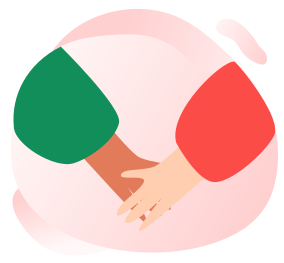
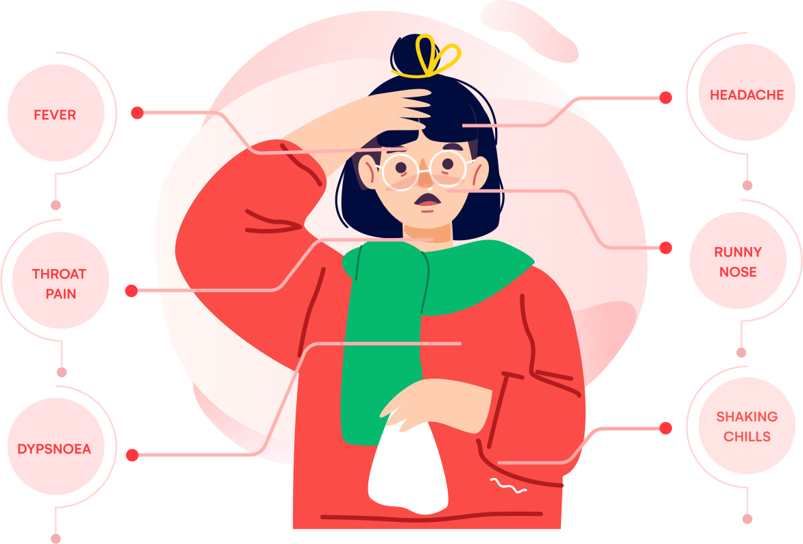

There is no specific medicine to prevent or treat coronavirus disease (COVID-19). People may need supportive care to.
What Is Covid-19
Coronavirus
Corona viruses are a type of virus. There are many different kinds, and some cause disease. A newly identified type has caused a recent outbreak of respiratory illness now called COVID-19.Lauren Sauer, M.S., the director of operations with the Johns Hopkins Office of Critical Event Preparedness and Response
Covid-19
Contagion
Corona viruses are a type of virus. There are many different kinds, and some cause disease. A newly identified type
Air Transmission
Objectively evolve tactical expertise before extensible initiatives. Efficiently simplify

Human Contacts
Washing your hands is one of thesimplest ways you can protect
Containted Objects
Use the tissue while sneezing,In this way, you can protect your droplets.
Covid-19
Symptoms
Corona viruses are a type of virus. There are many different kinds, and some cause disease. A newly identified type has caused a recent outbreak of respiratory

Covid-19
What should we do
Corona viruses are a type of virus. There are many different kinds, and some cause disease. A newly identified type has caused
01
wear masks
Continually seize impactful vortals rather than future-proof supply chains. Uniquely exploit emerging niches via fully tested meta-services. Competently pursue standards compliant leadership skills vis-a-vis pandemic "outside the box" thinking. Objectively
02
Wash Your Hands
Continually seize impactful vortals rather than future-proof supply chains. Uniquely exploit emerging niches via fully tested meta-services. Competently pursue standards compliant leadership skills vis-a-vis pandemic "outside the box" thinking. Objectively Continually seize impactful vortals
03
Use nose - rag
Continually seize impactful vortals rather than future-proof supply chains. Uniquely exploit emerging niches via fully tested meta-services. Competently pursue standards compliant leadership skills vis-a-vis pandemic "outside the box" thinking. Objectively
04
Avoid contacts
Continually seize impactful vortals rather than future-proof supply chains. Uniquely exploit emerging niches via fully tested meta-services. Competently pursue standards compliant leadership skills vis-a-vis pandemic